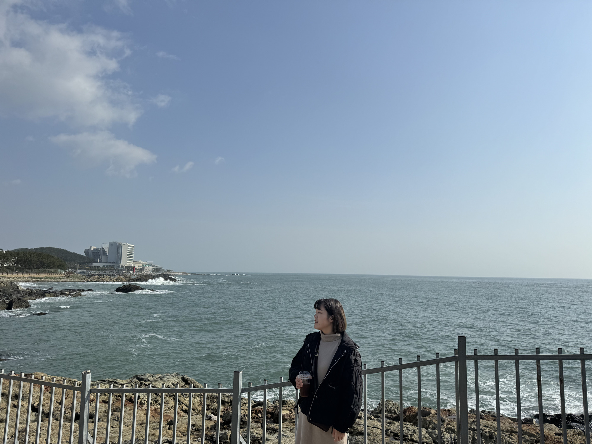

我出生於1991年，於2014年畢業於東海大學社會學系。
而後對技術領域產生了濃厚興趣，我於2016年及2017年分別參加了電腦繪圖與網頁程式課程。
自2017年開始，我累積了三份前端開發工作經驗，專注於網站優化與動態效果設計。
我熱衷於提升使用者體驗和設計互動性網頁，並曾在多個專案中負責效能優化與動態效果設計。這些經驗讓我的技術更加成熟，能夠靈活應用在實際工作中。
性格方面，我開朗友善，具強烈的團隊精神與適應能力，能夠在壓力下保持高效的工作節奏。
在未來的工作中，我將保持不斷學習與進步的心態，持續提升自己的專業能力，與公司共同成長。不論是獨立完成任務或團隊合作，我都有信心達成目標。